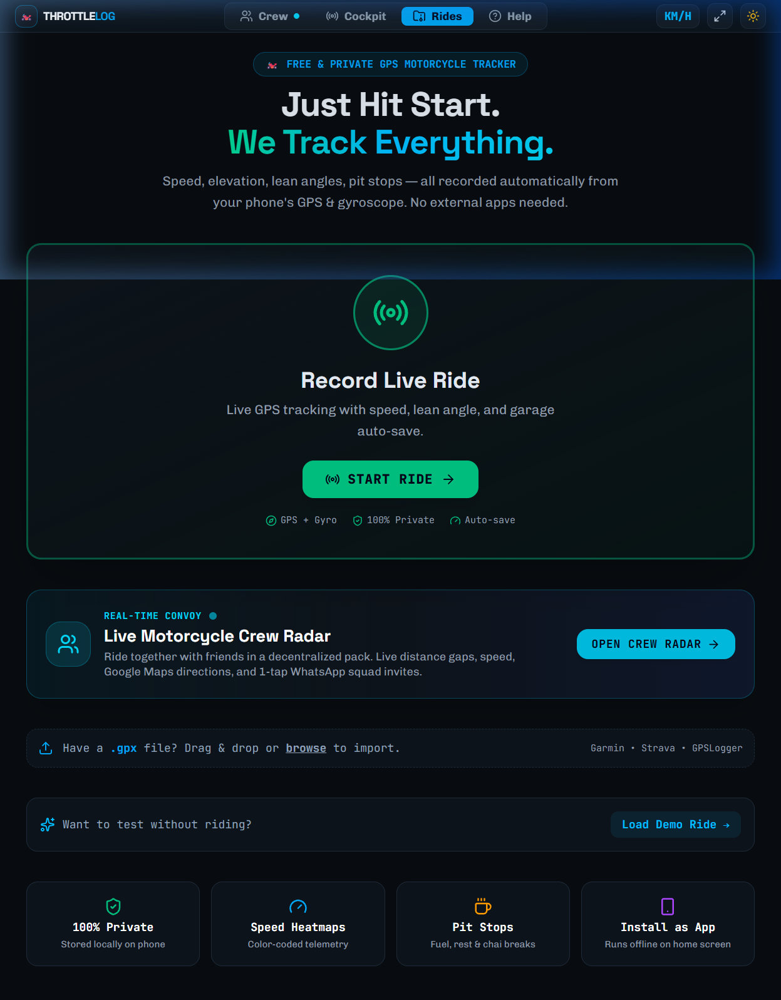
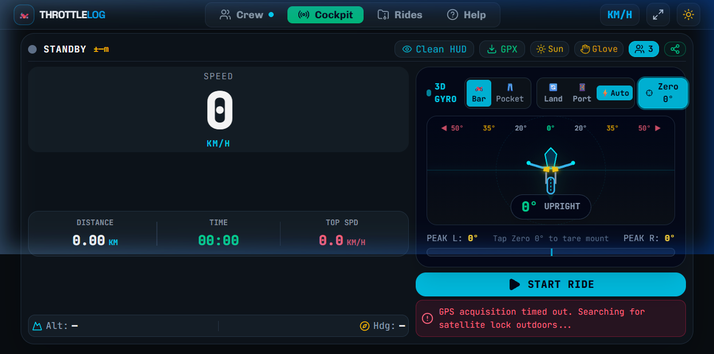
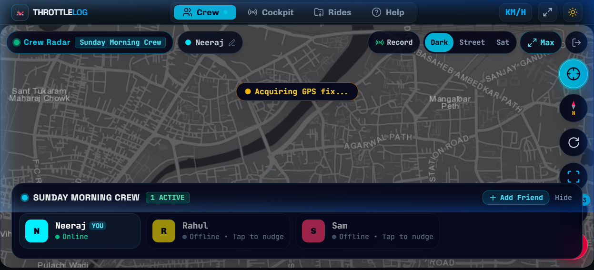
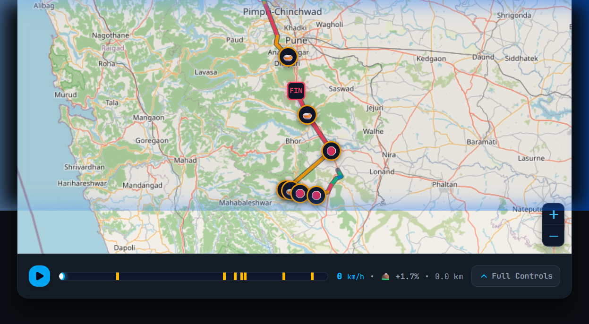
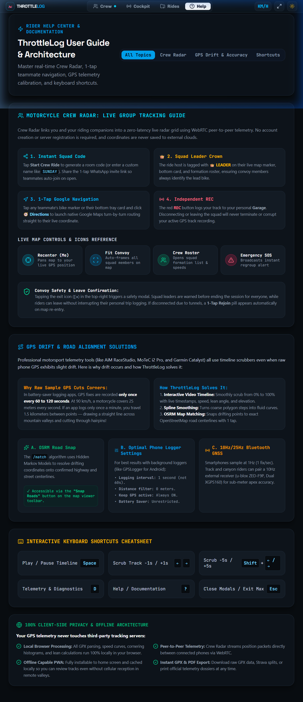

Real-Time Motorcycle Telemetry & Squad Radar • APK Review Dossier
ThrottleLog is engineered as a standalone, zero-telemetry motorcycle flight recorder. When packaged as an Android APK via Capacitor, the application boots completely offline directly from the device's local asset bundle (dist/), utilizing local IndexedDB for perpetual storage, WebCrypto for passwordless AES-GCM vault security, and MQTT WebSocket messaging for peer convoy radar.
Ultra-responsive, glove-optimized interface built with modern web technologies.
Independent map rendering designed for remote mountain passes and zero-cell zones.
Mathematical decomposition of smartphone IMU accelerometer and gyroscope data.
Decentralized convoy communication without user accounts or central databases.
Instant start portal with GPX file dropzone, live ride triggers, and squad radar access.

1. Click Load Demo Ride -> to immediately inspect route analytics and heatmaps.
2. Click Record Live Ride (START RIDE) to enter the full Cockpit telemetry dashboard.
3. Click Open Crew Radar to test the live decentralized convoy map.
Motorcycle heads-up flight dashboard with active 3D lean gauge, G-force, and speedometer.

Bar (handlebar mount) and Pocket (jacket/rider pocket) algorithms.1. Click Zero 0° to tare the gyro orientation.
2. Click Sun to toggle the high-contrast rally daylight HUD.
3. Click Bar / Pocket to switch IMU motion filtering modes.
Decentralized squad map with course-up rotation, buddy callouts, and 1-tap navigation.

1. Tap Compass (HDG/N) FAB on right to switch between North-Up and Course-Up rotation.
2. Click any rider card (e.g. Rahul or Sam) to lock camera and trail their position.
3. Click + Add Friend to test 1-tap WhatsApp squad invite link generation.
Deep-dive telemetry playback with video-style scrubber, pit stop detection, and road slope.

+1.7%).1. Click the ▶ (Play) button on the bottom scrubber to watch animated ride playback.
2. Hover or drag along the scrubber track to view speed and elevation at each curve.
3. Click any ☕ (Chai) or ⛽ (Fuel) pin on the map to view pit stop duration.
Built-in documentation, OSRM road-snapping engine, and keyboard shortcuts.

.json file for instant phone-to-phone transfer.1. Click Help in top navbar to open the comprehensive architecture guide.
2. In Garage, click Personal Cloud Backup to test the 1-tap JSON Vault export/import.
| Component | Validation Target | Status |
|---|---|---|
| IndexedDB Storage Engine | Atomic put/delete, 0-truncation bug fix | PASSED (Verified) |
| Course-Up Map Rotation | 150% transform, text counter-rotation, stopped heading hold | PASSED (Verified) |
| Crash Detection Pipeline | Hardware GPS speed feed, devicemotion listener leak fix | PASSED (Verified) |
| PTT Voice Blast Audio | One-touch AudioContext unlock, NotAllowedError guard | PASSED (Verified) |
| Offline Map Pre-Caching | 1,500 tile limit, error check, 1-tap route cache UI button | PASSED (Verified) |
| Emergency SOS Clearance Protocol | Squad-wide SOS_CANCEL MQTT broadcast, 1-tap "I'm Safe / Cancel SOS" |
PASSED (Verified) |
| Stop All Tracking & Privacy Mode | Immediate Foreground Service shutdown, WakeLock release, zero background battery | PASSED (Verified) |
| Permissions & Background Choice | Onboarding modal for GPS, Motion, Mic, and user background tracking choice | PASSED (Verified) |
| Workspace Typecheck | TypeScript tsc --noEmit with zero errors |
PASSED (0 Errors) |